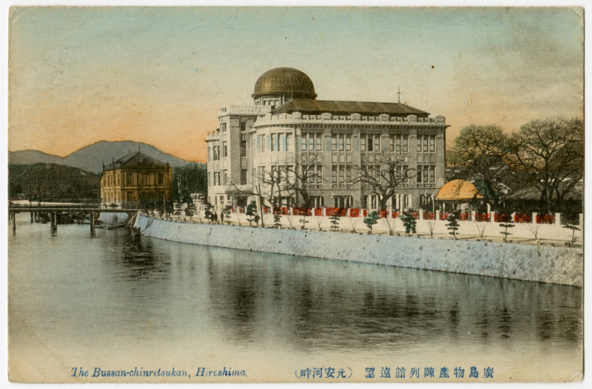
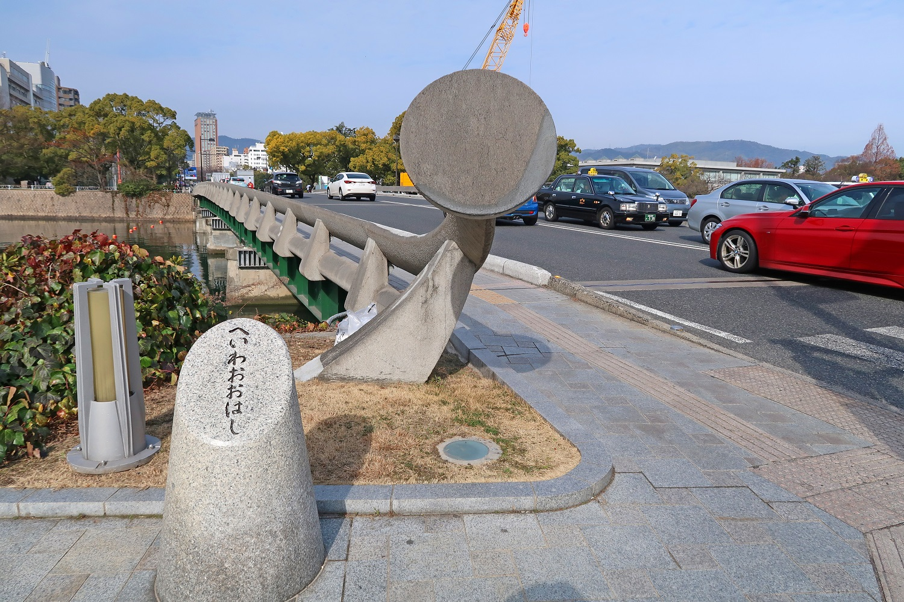
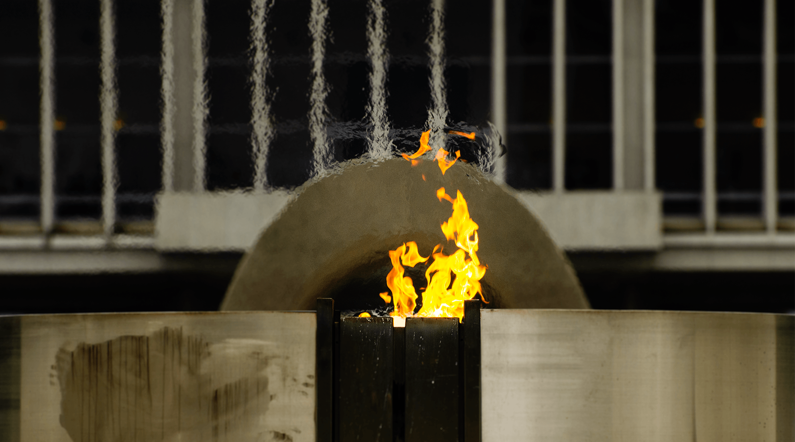
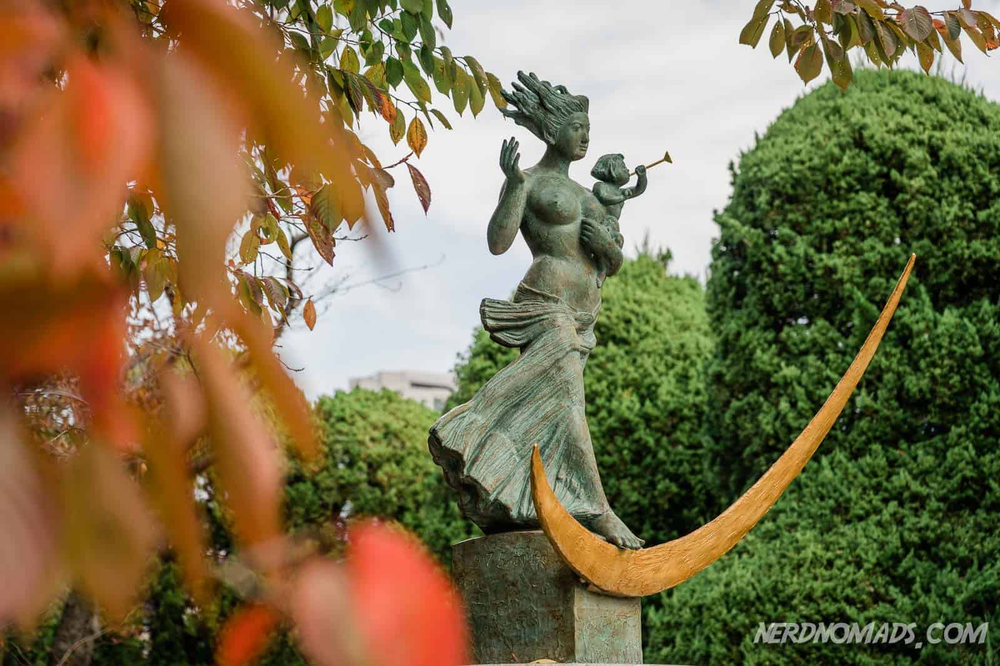

広島平和記念資料館
A testament to peace, a lesson for the future.
About the Museum
広島平和記念資料館は、広島平和記念公園内にあり、第二次世界大戦中の広島への原子爆弾投下に関する資料を展示しています。 1955年に設立され、犠牲者の遺品、写真、原爆の破壊力を生々しく伝える資料を収集・展示しています。 また、原爆投下前後の広島の歴史や、核兵器の存在する現代についても触れています。

平和の灯
絶えず灯るこの炎は、世界から核兵器がなくなる日まで燃え続ける、平和への強い願いの象徴です。

平和大橋
広島の平和記念公園をつなぐ、静かで優美な橋。

平和の灯
核兵器廃絶を願い、未来を見つめる炎。

平和の祈りの像
犠牲者の鎮魂と、未来への希望を込めた祈りが込められています。
お知らせ・ニュース
- 【重要】展示替えに伴う臨時休館のお知らせ
2025年6月16日 - 広島・長崎原爆写真ポスター展
2025年7月5日 新しい - 【重要】営業時間延長とオンラインチケット購入・予約サービスについて
2024年2月1日 - 【重要】ご来場の皆様の安全確保のため、以下の対策を行っております。
2023年5月8日 - 広島平和記念資料館 特別展 広島原爆投下映像資料展 1945年の写真と映像
2025年2月28日